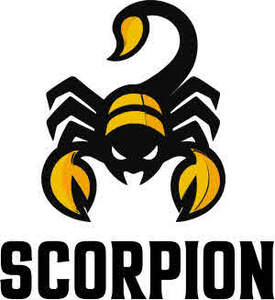

Trade Mark Journal No.2026/005 30 January 2026
UK00004293040 11 November 2025 (25,29,30,35)

- Class 25
- Gloves for apparel; Jerseys [clothing]; Clothing; Sportswear; Athletic clothing; Clothing for sports; Sports clothing; Jackets being sports clothing; Ready-to-wear clothing; Knitwear [clothing]; Sports garments; Parts of clothing, footwear and headgear; Men's clothing; Embroidered clothing; Jackets [clothing]; Triathlon clothing; Woolen clothing; Sports clothing [other than golf gloves]; Leisure clothing; Headbands [clothing]; Headbands for clothing; Clothing layettes; Layettes [clothing]; Clothing for leisure wear; Casual clothing; Garments for protecting clothing; Denims [clothing]; Clothing for cycling; Cashmere clothing; Shorts [clothing]; Footwear for sports; Sports footwear; Aprons [clothing]; Golf clothing, other than gloves; Footwear; Wristbands [clothing]; Visors [clothing]; Athletic footwear; Gloves [clothing]; Gloves as clothing; Leather clothing; Clothing of leather; Leather (Clothing of -); Plush clothing; Windproof clothing; Clothing for gymnastics; Playsuits [clothing]; Quilted jackets [clothing]; Mufflers [clothing]; Clothing for wear in wrestling games; Outerwear; Clothing for skiing; Athletics footwear; Fishing clothing; Latex clothing; Knitted clothing; Silk clothing; Furs [clothing]; Water-resistant clothing; Gabardines [clothing]; Linen clothing; Clothes for sports; Shoes for leisurewear; Capes (clothing); Woven clothing; Kerchiefs [clothing]; Articles of sports clothing; Dance clothing; Footwear for women; Women's clothing; Oilskins [clothing]; Corsets [clothing, foundation garments]; Footwear for sport; Footwear for use in sport; Ready-made clothing; Footwear for men; Footwear [excluding orthopedic footwear]; Party hats [clothing]; Maternity clothing; Muffs [clothing]; Jackets (Stuff -) [clothing]; Stuff jackets [clothing]; Belts [clothing]; Belts for clothing; Leisure footwear; Footwear for snowboarding; Golf footwear; Veils [clothing]; Casual footwear; Rainproof clothing; Infant clothing; Collars [clothing]; Moisture-wicking sports shirts; Beach clothing.
- Class 29
- Fruit snacks; Potato snacks; Legume-based snacks; Nut-based snack foods; Potato-based snack foods; Vegetable-based snack food; Vegetable-based snack foods; Sweet corn-based snack foods; Potato snack foods; Meat-based snack foods; Meat-based snack food; Fruit based snack foods; Potato crisps in the form of snack foods; Fruit- and nut-based snack bars.
- Class 30
- Confectionery; Chocolate confectionary; Chocolate confectionery; Fondants [confectionery]; Liquorice [confectionery]; Sugar confectionery; Chocolate-coated sugar confectionery; Lollipops [confectionery]; Pastilles [confectionery]; Chocolate flavoured confectionery; Truffles [confectionery]; Marshmallow confectionery; Chocolate confectionery products; Confectionery chocolate products; Sherbet [confectionery]; Tablet (confectionary); Confectionery ices; Chocolate confections; Mallows [confectionery]; Flavoured sugar confectionery; Sherbets [confectionery]; Dairy confectionery; Chocolate confectionery containing pralines; Liquorice flavoured confectionery; Peppermint for confectionery; Fruit confectionery; Non-medicated confectionery candy; Non-medicated chocolate confectionery; Ice confectionery; Chocolate for confectionery and bread; Almond confectionery; Flour confectionery; Frozen confectionery; Lozenges [confectionery]; Truffles (rum -) [confectionery]; Sesame confectionery; Confectionery items coated with chocolate; Sweets (Non-medicated -) in the nature of sugar confectionery; Peanut confectionery; Mint for confectionery; Confectionery items formed from chocolate; Nut confectionery; Confectionery bars; Chocolate confectionery having a praline flavour; Sherbets [confectionery ices]; Non-medicated sugar confectionery; Sugar confectionery (Non-medicated -); Chocolate decorations for confectionery items; Non-medicated confectionery containing chocolate; Candy coated confections; Sugar paste for confectionery; Malt dextrin glazings for confectionary; Stick liquorice [confectionery]; Low-carbohydrate confectionery; Dragees [non-medicated confectionery]; Prepared desserts [confectionery]; Confectionery made of sugar; Cocoa-based ingredients for confectionery products; Confectionery (Non-medicated -); Non-medicated confectionery; Ginseng confectionery; Confectionery chips for baking; Non-medicated flour confectionery containing chocolate; Ice confectionery in the form of lollipops; Confectionery in the form of mousses; Non-medicated flour confectionery coated with chocolate; Fruit jellies [confectionery]; Jellies (Fruit -) [confectionery]; Ice confections; Boiled confectionery; Zephyr [confectionery]; Rock [confectionery]; Boiled sugar confectionery; Ice cream confectionery; Chocolate sweets; Non-medicated flour confectionery; Non-medicated mint confectionery; Mint flavoured confectionery (Non-medicated -); Iced confectionery (Non-medicated -); Non-medicated flour confectionery containing imitation chocolate; Sweets [candy]; Confectionery containing jelly; Yoghurt (Frozen -) [confectionery ices]; Frozen yoghurt [confectionery ices]; Zefir [confectionery]; Non-medicated flour confectionery coated with imitation chocolate; Crystal sugar pieces [confectionery]; Confectionery containing jam; Mousse confections; Fruit drops [confectionery]; Confectionery in frozen form; Sweetmeats [candy]; Potato flour confectionery; Sweetmeats [candy] being flavoured with fruit; Frozen confections; Frozen dairy confections; Coated nuts [confectionery]; Confectionery items (Non-medicated -); Non-medicated confectionery products; Confectionery products (Non-medicated -); Lozenges [non-medicated confectionery]; Chocolate fillings for bakery products; Chocolate candies; Frozen yogurt [confectionery ices]; Yogurt (Frozen -) [confectionery ices]; Candies [sweets]; Pastila [confectionery]; Orange based confectionery; Caramels [sweets]; Chocolate flavoured beverages; Cachou [confectionery], other than for pharmaceutical purposes; Non-medicated confectionery having toffee fillings; Snack foods consisting principally of confectionery; Sweets (Non-medicated -) in the nature of chocolate eclairs; Chocolate syrups for the preparation of chocolate based beverages; Crystal sugar [not confectionery]; Chocolate syrups; Preparations for making of sugar confectionery; Bubble gum [confectionery]; Herbal honey lozenges [confectionery]; Peppermint pastilles [confectionery], other than for medicinal use; Ice cream confections; Non-medicated confectionery having a milk flavour; Confectionery in liquid form; Sweetmeats being candies; Caramels [candy]; Non-medicated flour confections; Chocolate pastries; Chocolate beverages; Sweets; Frozen confectionery containing ice cream; Confectionery in the form of tablets; Sweets (Non-medicated -) being acidulated caramel sweets; Chocolate marzipan; Non-medicated confectionery containing milk; Non-medicated confectionery in the form of lozenges; Sweets (candy), candy bars and chewing gum; Clear gums [confectionery]; Non-medicated confectionery in jelly form; Chocolate desserts; Sugar-free sweets; Chocolate flavourings.
- Class 35
- Retail services connected with the sale of clothing and clothing accessories.
Joe Akers-Douglas